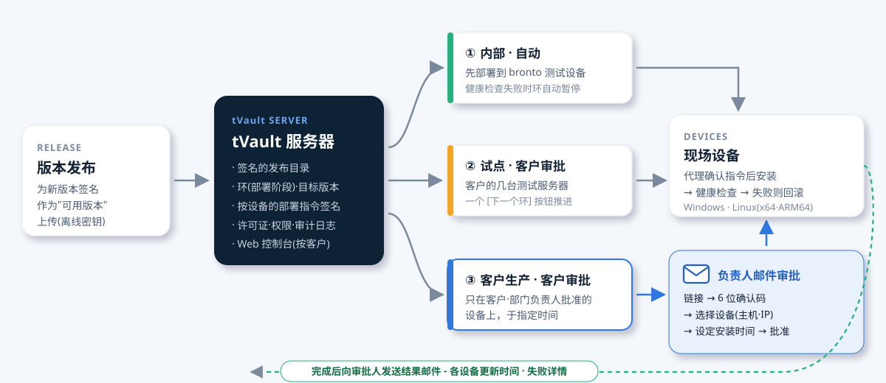

为您解决现场软件的这些烦恼
现场服务器和运维 PC 越多，安装、更新与许可证管理就越难靠人工完成。
一发布新版本，所有服务器同时改变
客户的生产服务器在工作时间突然重启会很麻烦。tVault 通过环(部署阶段)按内部 → 试点 → 客户的顺序逐步扩大，客户只更新已批准的设备。
逐个客户远程登录手动安装
运行一个包含安装密钥的安装程序，即可完成注册、服务配置和首次安装。之后由代理负责更新，失败时自动回滚。
不知道谁在用什么、许可证何时到期
按客户·部门·用户·设备授予权限(版本·期限·到期行为)，并在一个界面查看每台设备实际生效的权限和已安装版本。
试用结束后仍继续使用 · 复制后使用
许可证通过签名令牌和 PC 唯一值进行验证。复制品、期限结束和收回由程序自行阻止，对离职人员的个人 PC 甚至可下达删除指令。
打电话确认是否已更新
已批准的设备全部完成后，负责人会收到包含各设备更新时间的结果邮件。如有设备处于关机状态，会先发送中期报告。
没有互联网的隔离网络现场
用一个签名的打包文件导入。验证流程与在线相同，在离线期限内即使没有服务器，许可证也保持有效。
将发布与部署分开
发布是上线"可用的版本"，部署是决定"谁在何时获得"。管理员为每个环设定目标版本，点击 [下一个环] 逐步扩大范围。

版本发布
用离线密钥对构建好的软件包签名后上传。此时还没有任何设备发生变化。
设定环目标
在内部测试设备环上设定新版本。安装后运行检查失败时，该环会自动暂停。
客户审批
推进到客户环后，负责人会收到审批邮件。负责人选择设备和安装时间后批准。
确认结果
根据设备报告汇总结果，通过邮件发送给审批人，并保存在 Web 控制台中。
tVault 的作用
以客户为中心的 Web 控制台 NEW
在左侧树中选择客户(组)，该客户的设备、用户、权限、部署和备注就会汇集到各标签页中。由于连部门(子组)一并显示，便于以客户为单位处理工作。
- 客户·部门树 - 折叠展开、名称搜索、含子组的设备数
- 概览：设备·用户数、各产品版本分布、进行中的部署审批
- 设备标签页：按部门分组，显示主机名·IP·已安装版本·最后连接
- 不使用脚本的界面 + 两步验证(密码 + OTP)

选择性部署 - 环(部署阶段) NEW
为每个产品设定默认行为。保持时只更新环中指定的设备，跟随时立即跟随新版本。环以客户·部门·用户·设备为对象，并设定目标版本和方式(自动 / 客户审批)。
- 遵循最具体对象的环(设备 > 用户 > 部门 > 客户)
- 一个 [下一个环] 按钮即可扩大阶段
- 将环的目标改为旧版本，只有这些设备会回退
- 安装后运行检查失败(回滚)时自动暂停该环
- 服务器也会拦截 - 不下发非目标的软件包

客户负责人的邮件审批 NEW
在客户审批环上设定新版本后，客户(或部门)的审批负责人会收到邮件。负责人无需登录即可打开链接，输入该邮件收到的 6 位确认码后，选择要更新的设备和安装时间，批准或暂缓。
- 设备表：按部门分组，显示主机名 · IP · 设备名 · 当前版本
- 按设备选择、按部门排除 - 超过 100 台也容易区分
- 安装时间：立即或指定日期·时间(夜间作业时段)
- 每位负责人单独的链接，有效期 7 天，一经决定即结束
- 无负责人或已电话确认时，管理员填写备注后代为批准

按设备的结果与结果邮件 NEW
已批准设备的更新全部完成后，立即向审批人发送结果邮件。每台设备都包含旧版本 → 当前版本、结果和更新时间。如有设备处于关机状态，会在设定时间(默认 1 小时)后发送中期报告，全部完成后再发送最终报告。
- 完成 · 失败 · 进行中的数量及失败详情
- 再次打开同一链接即可查看结果表
- 向管理员通知地址发送暂缓·过期·结果副本
- 可在设置中调整中期报告时间·审批期限·再次提醒

一次安装 · 自动更新 · 自动回滚
运行文件名中包含安装密钥的安装程序，即可完成设备注册、服务注册和首次安装。之后代理每 10 分钟检查一次签名，并保持在目标版本。
- 安装 → 运行检查(健康检查) → 失败时自动回滚到之前的版本
- 需保留的数据文件夹在更新·删除时予以保留
- Windows：通过通知区域图标运行·关闭·更新·删除
- 用户自选更新：立即·稍后·跳过(必需版本不可跳过)
- 在通知中直接显示更新内容(发行说明)

许可证 · 权限
为每个产品定义版本(Basic · Pro 等)及功能·角色，并向客户·部门·用户·设备授予权限。权限以签名的许可证令牌下发到每台设备，由程序直接验证。
- 期限：永久 · 订阅 · 限期 · 试用(需审批)
- 到期行为：继续(仅停止更新) · 降低版本 · 阻止运行 · 删除
- 离线期限 - 即使服务器不在了，已购买的部分仍可使用
- 用 PC 唯一值识别复制品 · 通过吊销列表收回
- 离职处理：收回权限，公司设备转为公用，个人设备下达删除指令

所有操作附备注 · 审计日志 NEW
收回、停用设备、部署目标、代为批准等难以撤销或影响客户的操作，必须填写备注(原因·申请人·联络内容)。在客户界面的备注·历史标签页中，可一目了然地查看备注和操作记录。
- 客户备注 - 通话·拜访·约定内容
- 哈希链审计日志 - 事后无法篡改
- 审批请求：决定人·邮箱·IP·所选设备·安装时间

以签名守护的部署
为防范针对更新路径的攻击，使用按角色划分的密钥签名。设备只信任最初获得的信任根(root)，即使服务器地址改变，没有签名也不会安装任何内容。
- 发布密钥保存在服务器之外(离线) - 即使服务器被攻破也无法伪造软件包
- 检查软件包长度·哈希，防止回退到旧目录的攻击
- 按设备的部署指令也签名 - 只能从已签名的版本中选择
- 只接受用设备密钥签名的请求 · 丢失的设备可停用

互联网试用 · 内置邮件 NEW
只需网站上的一个 [免费试用] 按钮，从申请 → 邮箱验证 → 自动批准 → 个人安装密钥，全程无需人工即可开通。试用策略(版本·天数)代替审批，并记录在审计日志中。邮件由 tVault 服务器直接发送，无需外部服务。
- 文件名中包含安装密钥的安装程序 - 客户只需下载运行，1 台 PC·7 天内安装
- 阻止同一邮箱·同一 PC 的重复申请，提供邮箱·域名·PC 黑名单
- 结束前 3 天·最后一天发送邮件并在程序内通知 · 结束后即被阻止
- 试用界面：按状态统计数量，按来源渠道·安装 PC·营销订阅查找，转为正式版·收回·调整期限
- 内置邮件发送(DKIM 签名) - 测试·通知邮件，广告邮件只发给同意接收者，附 (广告) 标识·退订链接

状态表 · 双人审批 · 管理工具 NEW
将客户 → 部门 → 用户 → 设备展开在一张表中，查看各产品的已安装版本和更新状态(最新·等待·暂缓·失败)。难以撤销的操作可按类别设置为需要另一位管理员批准。
- 状态表：仅组 · 到用户 · 到设备，各单元格目标的设定原因，直接修改权限
- 双人审批：试用·限期权限、彻底删除、删除审计日志、管理员账户
- 组结构图：拖动移动(含子组)·重命名·一次创建多个组
- 列表 → 详情(只读 → [编辑])界面、在 Web 上执行 CLI 命令、批量删除
- 移动应用(APK)注册·签名验证·版本管理及从 Web 下载

更多界面
以下均为用演示数据拍摄的实际界面，点击可放大。tVault Web 控制台目前提供韩语版。


手机上也能用
Web 控制台和审批界面会适配手机屏幕宽度显示。Web 控制台可作为应用安装到主屏幕(PWA)，审批请求·部署暂缓·新试用·安装失败会通过推送通知即时送达。出差时也能审批并查看结果。


组成与支持环境
| tVault 服务器 | Linux · PostgreSQL(默认)或 SQLite(小型交付) · 软件包使用文件存储 · 内置邮件发送(DKIM 签名) |
|---|---|
| 代理 | Windows(服务 + 通知区域图标) · Linux x64 · ARM64(systemd) · 代理自身也会更新 |
| Web 控制台 | 客户树·标签页、状态表、部署·审批·权限·设备·试用·邮件·审计日志 · 双人审批 · 命令执行 · 密码 + OTP 两步验证 · 在手机上作为应用安装(PWA)·推送通知 |
| CLI | 制作软件包·release(签名)·root 密钥更新·打包导入等需要签名密钥的操作仅能在 CLI 中进行 |
| 部署 | 各产品默认行为(保持·跟随) · 环(对象·目标·自动/客户审批·暂停) · 按设备的签名部署指令 · 服务器端下载管控 |
| 客户审批 | 按负责人的邮件链接 · 6 位确认码 · 按设备选择(主机名·IP) · 安装时间 · 结果邮件(中期·最终) |
| 许可证 | 版本·功能·角色 · 永久·订阅·限期·试用 · 到期行为 · 离线期限 · PC 唯一值 · 吊销列表 |
| 安装途径 | 安装密钥链接 → 运行安装程序 → 注册·服务·首次安装 · 隔离网络使用签名的打包文件 |
| 互联网试用 | 公开申请界面 · 邮箱验证 · 按策略自动批准 · 个人安装密钥(1 台 PC) · 重复申请·拦截 · 到期提醒邮件 · 转为正式版·收回 |
| 移动应用 | Android APK 注册·签名(v2·v3)验证·版本管理·从 Web 下载 · 应用通过安装密钥注册，获得手机专用许可证 |
| 配套产品 | tOps(brontod · tdoctor)部署与 tdoctor Basic/Pro 许可证 · 也可交付到客户自有服务器 |
常见问题
发布新版本后，客户服务器会马上改变吗?
不会。如果产品的默认行为是"保持"，只有环中指定的设备会改变。在客户审批环中，只有负责人批准的设备会从指定时间开始改变。
如果负责人的邮件被转发给别人怎么办?
仅凭链接无法作出决定。系统会向收到链接的邮箱发送 6 位确认码，必须输入该确认码才能打开决定界面。已从负责人中移除的邮箱，其链接会被阻止。
更新时出现问题怎么办?
安装后运行检查失败时，设备会自行回到之前的版本，并自动暂停该环，防止问题扩散到其他设备。管理员确认原因后，填写备注再重新启用。
没有互联网的现场也能用吗?
可以。通过签名的打包文件导入，许可证在离线期限内无需服务器也能保持有效。也有在客户内部另设 tVault 服务器的交付方案。
可以从网站自动开通试用吗?
可以。为每个产品设定试用策略(版本·天数·离线期限)，并将网站按钮链接到申请界面，即可自动完成申请 → 邮箱验证 → 安装程序。人员只需在试用界面进行转为正式版·收回操作。bronto 的 tdoctor 试用正是这样运行的。
不用 tOps 或 tems，只用 tVault 可以吗?
可以。只要有清单(安装位置·服务命令·运行检查方法)，任何程序都可以用 tVault 进行部署·更新·许可证管理。
部署与许可证，从此集中一处
告诉我们现场数量和运维方式，我们将用实际界面为您演示运维流程。